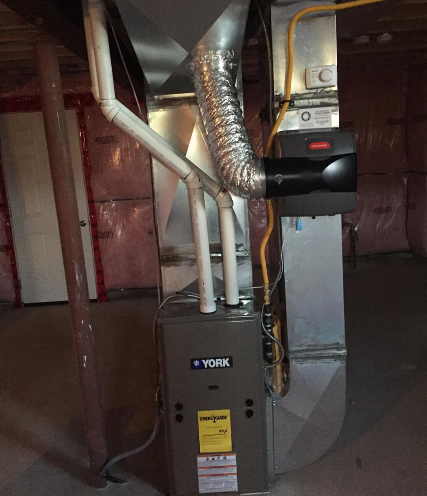

HVAC in Halton Hills
HVAC Services In Halton Hills, ON
Furnace, AC, heat pump, water heater and ductwork installation and repair in Halton Hills by IKAD Mechanical, a family-owned HVAC contractor based in Oakville since 2010.
Furnace, AC, heat pump, water heater and ductwork installation and repair in Halton Hills by IKAD Mechanical, a family-owned HVAC contractor based in Oakville since 2010.
Halton Hills covers a lot of ground, older homes in Georgetown's core, newer builds in the Glen Williams area, and rural properties out toward Acton that often run on propane or oil. We work across all of it.
A typical Halton Hills job: a century home in Georgetown on propane, owner wanted to convert to natural gas. We coordinated with Enbridge for the gas line installation, sized a new high-efficiency two-stage furnace, ran new flexible gas lines through the basement, and removed the old propane tank. The owner's heating cost dropped roughly 35% in the first season.

The coldest part of Halton in winter, inland, elevated, with no lake moderation. Temperature differential vs Oakville can be 4–6°C colder on winter nights. Rural properties on private wells need water-heater sizing that accounts for cold incoming water (sometimes 4–6°C in February vs 10–12°C city water). The escarpment limits gas-line access, many rural homes still run on propane.
Knowing the era of a Halton Hills home tells us roughly what equipment is in the basement and what failure modes to expect. Here's what 15+ years of installs has taught us about each era:
Century homes, often on propane or recently-converted gas. Heating is usually still hot-water boilers with cast-iron radiators. We do boiler service, oil-to-gas conversions, and propane-to-gas conversions when Enbridge extends a line.
Mid-century rural homes. Many additions and renovations done over decades, so mechanical systems are patchworks. We often replace 2–3 different systems serving one house.
Newer suburban housing within Georgetown's growth area. Standard forced-air gas equipment. Typical replacement schedule.
Large properties on private wells with propane tanks. Often custom HVAC: zoned forced-air, propane tankless, sometimes geothermal. We coordinate with well-water companies on softener and pressure-tank work alongside the HVAC.
Custom-home builds 2015+. We do mechanical design for builders working in the Glen Williams and Norval areas.
Real situations we run into across Halton Hills every month, how we diagnose and what the typical fix looks like:
Enbridge runs the service line, we install a new high-efficiency furnace and water heater, run the gas piping, remove the old propane tank, coordinate with the propane company. Typical heating cost savings: 30–40%.
Best solution is usually a cold-climate heat pump (Mitsubishi Hyper-Heat) with electric backup and a small propane water heater. We've installed several in the Limehouse–Acton corridor.
Service old cast-iron-radiator boilers, replace zone valves, sometimes upgrade to a Viessmann or NTI condensing boiler while keeping the radiators.
Whole-home hydronic in-floor radiant on main level, ducted variable-speed AC, separate snow-melt loop, propane backup. Typical mechanical package $55,000–$85,000.
Our trucks regularly reach every corner of Halton Hills, including jobs near these landmarks and across the neighbourhoods listed below.
Propane and oil-to-gas conversions are routine here, as is replacing 60+ year old cast-iron radiator boilers in downtown Georgetown heritage homes (we keep the radiators, replace the boiler with a modern condensing unit). Rural properties without natural gas access get high-efficiency propane furnaces sized for tank refill economics.
Rural Halton Hills is our largest cold-climate heat pump market. No gas line, expensive propane, and the new Home Renovation Savings Program rebates make ASHPs financially compelling. Mitsubishi Hyper-Heat and Lennox SL25XPV are the most-installed models, often with electric resistance backup.
Rural properties on private wells need different sizing math: cold incoming water can be 4-6°C in February vs 10-12°C city water, that affects tankless flow ratings and tank recovery time. We test incoming water hardness and recommend softener installation more often than in Oakville.
Custom country homes on the Niagara Escarpment near Glen Williams, Hornby and Limehouse routinely include whole-home hydronic radiant. Pairs with high-efficiency propane or condensing-gas boilers. Concrete slab basement zones are non-negotiable luxury items here.
Long rural driveways (200+ ft) common in Halton Hills are the perfect snow melt candidates. We design for the heaviest snow loads in our service area, escarpment exposure can mean 30% more snow than coastal Halton. Hydronic systems exclusively for this length.
Adding forced-air to century homes that never had ducts is a common Halton Hills retrofit. We design compact-trunk systems to minimize chase impact in plaster-wall heritage homes, often combined with new high-velocity supply runs in finished ceilings.
Post-renovation balancing is common here, additions, basement finishes and second-floor bumps push the existing system out of balance. We measure and rebalance, often part of a renovation project's final commissioning.
Country builds on 1-10 acre lots near Glen Williams, Limehouse and Norval are our growing Halton Hills custom-home business. Full design, propane vs heat pump economics analysis, geothermal where applicable, snow melt, generator-integrated emergency power.
Restaurants in Georgetown core, plazas along Mountainview, light industrial in Acton, and a growing number of country-property short-term rentals needing dependable HVAC. We pull Halton Hills permits and dispatch within 3-5 hours given the rural drive time.
All services are delivered by our own Halton Hills-experienced crew, no subcontractors. See residential services · commercial services · request a Halton Hills quote.
Searching for an HVAC contractor near you in Halton Hills? IKAD Mechanical is a family-owned, TSSA-certified HVAC contractor based in Oakville since 2010, with same-day during business hours, day-after for outer rural addresses response across Halton Hills.
Why Halton Hills homeowners pick IKAD when they search for HVAC near them:
More on our credentials and team on the About page, or get a free Halton Hills quote in 60 seconds.
Yes, propane furnaces, propane water heaters and oil-to-gas (or oil-to-propane) conversions are routine for us. We also handle the tank decommissioning.
Georgetown is about 35–40 minutes from our Upper Middle Rd shop. Acton is about 50–55 minutes. We don't add a travel surcharge for Halton Hills.
Absolutely, a cold-climate heat pump with electric backup is one of the best options for an off-grid-gas rural home. We've done several in the Limehouse and Glen Williams area.
For more HVAC FAQs across Halton, see our main FAQ page (40+ questions), or ask about your Halton Hills project directly.
Georgetown core, Acton, and the rural townships in between, we work across all of Halton Hills:
Rural concession road we haven't named? We service those too. Call and we'll confirm.